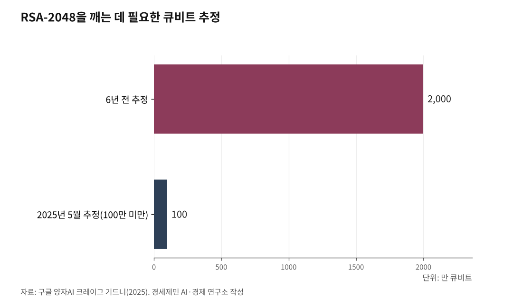

[포스트 미토스 AI 번외] 양자컴퓨터 X 미토스, 방패와 창이 동시에 바뀐다
쇼어 알고리즘과 미토스급 AI, 암호와 구현 동시 위협
신약·재료·최적화에서 새 길, 두 기술을 무엇에 쓰느냐가 관건
양자컴퓨터와 미토스급 AI가 동시에 발전하고 있다. 양자컴퓨터는 인터넷·금융·행정망 안전을 지키는 자물쇠를 깰 수 있는 열쇠다. 미토스급 AI는 자물쇠 옆 담장 틈을 자동으로 찾아낸다.

두 기술이 손잡으면 방어자는 자물쇠도 잃고 담장도 잃는다. 같은 두 기술을 거꾸로 신약 개발과 새 소재 찾기, 일정 최적화에 돌리면 사람을 살리는 도구가 되기도 한다.
1. 쇼어 알고리즘이 미토스를 만나면
지금 인터넷 결제, 공인인증, 금융망은 'RSA'(공개키 암호 표준)와 '타원곡선암호(ECC)'라는 자물쇠로 잠겨 있다. 두 자물쇠는 큰 숫자를 소수로 쪼개기 어렵다는 수학 원리에 기댄다. 미국 국립표준기술원(NIST)은 일반 컴퓨터로 RSA-2048 자물쇠를 푸는 데 우주 나이보다 오래 걸린다고 밝혔다.
1994년 미국 AT&T 벨연구소 피터 쇼어(Peter Shor) 연구원은 양자컴퓨터만 충분히 크면 이 자물쇠를 빠르게 풀 수 있다고 증명했다. 양자컴퓨터는 일반 컴퓨터와 셈하는 방식 자체가 다른 기계다. 문제는 "양자컴퓨터가 충분히 커지는 때"가 언제냐였다.
2025년 5월 미국 구글 양자AI 소속 크레이그 기드니(Craig Gidney) 연구원은 그 시점이 빨리 올 수 있다고 밝혔다. 양자컴퓨터 성능 단위 '큐비트(qubit)'가 100만 개 미만이면 일주일이면 RSA-2048 자물쇠를 깬다는 계산이다. 6년 전 추정치(2000만 큐비트·8시간)를 20분의 1로 줄였다.
미토스는 다른 길로 간다. 자물쇠를 직접 부수지 않고 자물쇠 옆 담장 틈을 자동으로 찾는다. 미국 앤트로픽(Anthropic)이 2026년 4월 7일 공개한 클로드 미토스 프리뷰(Claude Mythos Preview)는 사람이 만든 프로그램에서 빈틈을 스스로 훑는다([포스트 미토스 AI ①] 참조). 현실 해킹은 자물쇠보다 담장 틈으로 들어오는 일이 더 많다.
양자컴퓨터가 자물쇠를 깨고 미토스급 AI가 담장 틈을 동시에 찾으면, 방어자는 두 곳을 한꺼번에 막아야 한다.

2. 지금 훔쳐서 나중에 푼다
보안 업계에 "지금 훔쳐서 나중에 푼다"라는 말이 굳어진 지 오래다. 공격자가 지금 잠긴 자료를 일단 훔쳐 쟁여 둔다. 양자컴퓨터가 충분히 커지는 날 자물쇠를 풀어 보겠다는 셈법이다.
지금 시점에 이미 새어 나간 공공·금융 자료가 미래에 풀릴 수 있다는 뜻이다. 개인 의료 기록, 주민등록번호, 금융 계좌, 외교 문서처럼 한 번 새면 돌이키기 어려운 자료가 위험하다. 미국 국가안보국(NSA)은 'CNSA 2.0' 지침에서 보안 수명 10년 이상 자료부터 양자내성암호로 옮겨야 한다고 밝혔다.
3. 미국이 먼저 움직였다 - NIST 표준과 NSA 일정
미국 국립표준기술원(NIST)은 2024년 8월 13일 양자컴퓨터에 안 뚫리는 새 암호 표준 3종을 확정했다. 2016년 시작된 8년 공모 끝에 골라낸 결과다.
새 표준 ML-KEM(자물쇠 열쇠를 안전하게 주고받는 방식)은 키 교환에 쓴다. ML-DSA와 SLH-DSA(문서가 위조되지 않았다는 도장 찍는 방식)는 전자서명에 쓴다. 자물쇠 자체는 미국 IBM 연구진 주도로 만든 '크리스탈스-카이버(CRYSTALS-Kyber, 격자 기반 암호)' 방식을 바탕에 깔았다.
미국 국가안보국(NSA)은 2022년 9월 7일 발표한 'CNSA 2.0' 지침에서 2030년까지 단계적 전환, 2035년까지 미국 국가안보 전산망 전량을 새 암호로 갈아 끼운다고 못 박았다. NSA는 "2035년이 마지노선"이라고 공식 설명한다.
4. 한국도 따라 움직인다 - 개인정보 관리 과제
한국도 일찍 움직였다. 국가정보원과 과학기술정보통신부는 2023년 7월 12일 제12회 정보보호의 날 기념식에서 관계부처 합동 '범국가 양자내성암호 전환 마스터플랜'을 발표했다. 2035년까지 국가 암호망 전량을 양자컴퓨터에 안 뚫리는 새 암호로 바꾼다는 계획이다.
기술 쪽은 한국형 양자내성암호(KpqC) 공모전이 맡았다. 국정원 후원, 국가보안기술연구소·양자내성암호연구단 주관이다. 2021년 11월 16개 알고리즘으로 출발해 2025년 1월 4종을 확정했다. NTRU+(상명대·고려대), SMAUG-T(서울대 천정희 교수·국군방첩사령부), HAETAE(서울대 천정희 교수), AIMer(삼성SDS·카이스트·성신여대) 4종이다.
과기정통부와 한국인터넷진흥원(KISA)은 2025년 에너지·의료·행정 3개 분야에서 새 암호를 처음 시범 적용했다. 2026년에는 통신·금융·국방·교통·우주 5개 분야로 늘려 분야별 9억원, 모두 45억원을 들인다. 4월 16일과 17일 코엑스에서 열린 'NetSec-KR 2026' 행사에서 KISA 김준섭 팀장은 "전환 첫 단계는 새 암호를 빨리 넣는 일이 아니라, 우리 체계 안에 어떤 암호가 어디에 쓰이는지 목록부터 만드는 일"이라고 강조했다.
서버 통신, 인증서, 가상사설망(VPN), 전자서명 곳곳에 암호가 숨어 있다. 어디 쓰이는지 모르면 무엇을 바꿀지 알 수 없다. 2035년 전에 양자컴퓨터가 위협 수위에 닿으면 그동안 새어 나간 자료가 풀릴 수 있다.
5. 같은 기술, 다른 쓰임 - 신약·재료·최적화
같은 양자컴퓨터와 AI를 방패로 쓰는 자리도 있다.
미국 IBM은 2026년 4월 16일 공식 누리집에서 양자컴퓨터로 빛 활성 분자 움직임을 그대로 흉내내 암 치료제 후보 분자를 찾아냈다고 밝혔다. 영국 비영리 의학연구재단 웰컴 리프(Wellcome Leap)가 주최한 양자 신약 개발 경연에서 우승한 연구다. 핀란드 양자 신약회사 알고리드미크(Algorithmiq), 미국 클리블랜드 클리닉(Cleveland Clinic), IBM이 손잡고 IBM 양자컴퓨터 100큐비트로 풀었다. 광역동치료는 빛으로 암세포를 골라 죽이는 치료법이다.
신약뿐이 아니다. 독일 메르세데스벤츠는 미국 사이콴텀(PsiQuantum)과 손잡고 전기차 배터리 화학 조합을 푼다. 미국 아이온큐(IonQ)는 한국 현대차와 양자 알고리즘으로 리튬 배터리 소재를 연구한다. 비료에 쓰는 질소 고정 효소를 양자컴퓨터로 풀어 에너지 적게 쓰는 비료 길을 찾는 연구도 활발하다.
기계 장치도 빠르게 큰다. IBM은 2025년 6월 10일 공식 누리집에서 2029년 미국 뉴욕주 포킵시 양자자료센터에서 '스털링(Starling)'을 가동한다고 밝혔다. 1억 가지 연산을 한꺼번에 돌리는 큰 양자컴퓨터다. 그 전 단계로 2026년 쿠카부라(Kookaburra), 2027년 코카투(Cockatoo)를 차례로 내놓는다.
미국 캘리포니아공과대학(Caltech) 연구진은 2025년 9월 24일 학술지 '네이처'에 6100 큐비트짜리 양자컴퓨터 부품을 발표했다. 종전 100여 큐비트에서 60배 큰 부품이다. 2029년 안팎이면 양자컴퓨터가 산업 현장에서 본격 일한다는 뜻이다.
같은 기계가 인터넷 자물쇠를 깨기도 하고 새 암 치료제도 찾는다. 같은 미토스급 AI가 담장 틈을 찾기도 하고 메우기도 한다. 무엇을 위해 쓰느냐는 결국 쓰는 쪽 선택이다.
참고문헌
1. Peter W. Shor, "Polynomial-Time Algorithms for Prime Factorization and Discrete Logarithms on a Quantum Computer", SIAM Review 41(2), 1999, https://doi.org/10.1137/S0036144598347011
2. Craig Gidney, "How to factor 2048 bit RSA integers with less than a million noisy qubits", arXiv:2505.15917, 2025.5.21., https://arxiv.org/abs/2505.15917
3. "NIST Releases First 3 Finalized Post-Quantum Encryption Standards", 미국 국립표준기술원(NIST), 2024.8.13., https://www.nist.gov/news-events/news/2024/08/nist-releases-first-3-finalized-post-quantum-encryption-standards
4. "The Commercial National Security Algorithm Suite 2.0 and Quantum Computing FAQ", 미국 국가안보국(NSA), 2022.9.7., https://media.defense.gov/2022/Sep/07/2003071836/-1/-1/0/CSI_CNSA_2.0_FAQ_.PDF
5. "2035년까지 국내 암호체계 양자내성암호로 전환", 정보통신신문, 2023.7.12., https://www.koit.co.kr/news/articleView.html?idxno=114989
6. "양자내성암호", 한국인터넷진흥원(KISA) 차세대암호 누리집, 2025., https://seed.kisa.or.kr/kisa/ngc/pqc.do
7. "Project Glasswing: Securing critical software for the AI era", 미국 앤트로픽(Anthropic) 공식 누리집, 2026.4.7., https://www.anthropic.com/glasswing
8. "IBM Sets the Course to Build World's First Large-Scale, Fault-Tolerant Quantum Computer", 미국 IBM 뉴스룸, 2025.6.10., https://newsroom.ibm.com/2025-06-10
9. "How IBM Quantum is Enabling Healthcare and Biology Research", 미국 IBM 뉴스룸, 2026.4.16., https://newsroom.ibm.com/2026-04-16
10. "Caltech Team Sets Record with 6100-Qubit Array", 미국 캘리포니아공과대학, 2025.9.24., https://www.caltech.edu/about/news/caltech-team-sets-record-with-6100-qubit-array
※ 이 기사는 AI 프로그램 클로드를 활용해 작성했다.
#포스트미토스AI #클로드미토스 #앤트로픽 #양자컴퓨터 #양자내성암호 #쇼어알고리즘 #NIST #KpqC #국정원 #김갑봉 #경세제민